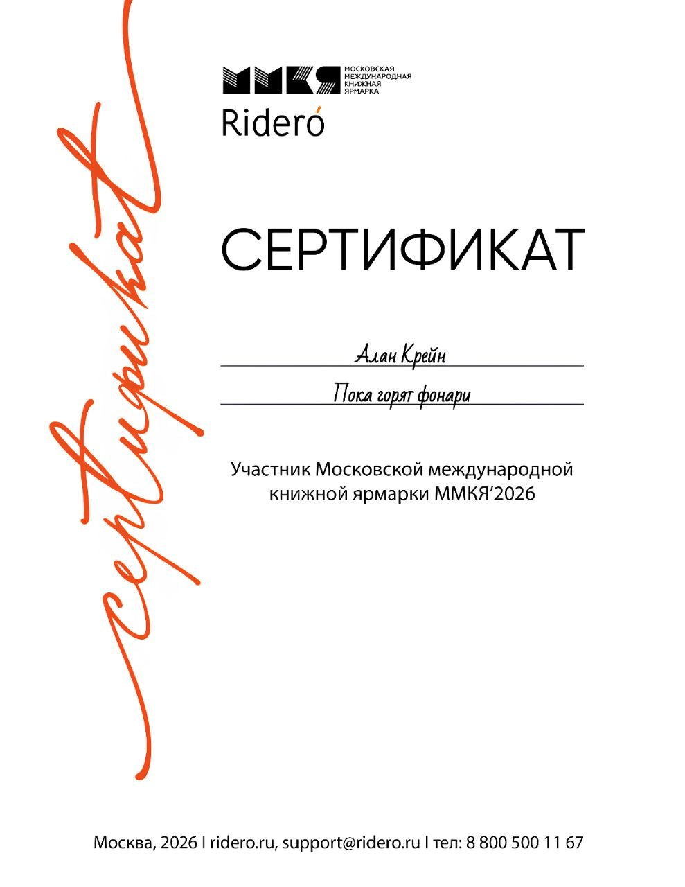

Об авторе
Алан Крейн (Alan Crane) — писатель из Кара-Балты, Кыргызстан, работающий в направлениях психологической прозы, поэзии и философского фэнтези. В его творчестве особое место занимают внутренний мир человека, сложность человеческих отношений, нравственный выбор и вопросы, на которые не всегда существует однозначный ответ.
Литература для него — возможность исследовать человека через его чувства, поступки, противоречия и переживания. От поэзии, ставшей отправной точкой творческого пути, Алан постепенно пришёл к прозе и созданию собственных художественных миров, в которых психологическая глубина соседствует с философскими размышлениями, а личные истории обретают более широкий смысл.
Биография
Долгое время литература не занимала значительного места в жизни будущего писателя. Всё изменилось в четырнадцать лет, когда благодаря близкой подруге у него появился интерес к чтению и литературному творчеству. В пятнадцать-шестнадцать лет последовали первые попытки писать стихи и рассказы, однако тогда они оставались непродолжительными.
Позднее, после непростых личных событий, письмо стало занимать в его жизни гораздо более важное место. Алан вернулся к поэзии, начал активно создавать стихотворения и публиковать их на Стихи.ру. Постепенно отдельные тексты сложились в более масштабные творческие замыслы, а первые литературные опыты стали основой для дальнейшего развития.
Со временем автор обратился к прозе, стремясь исследовать человеческую психологию не только через отдельные переживания, но и через судьбы персонажей, их отношения и решения. Так появилась книга «Вниз по рельсам», открывшая новый этап его литературного пути.
Впоследствии вышел поэтический сборник «Пока горят фонари», объединивший стихи в самостоятельное произведение. В 2026 году сборник был представлен в рамках Московской международной книжной ярмарки (ММКЯ), став важным событием в авторском пути.

Сертификат участника Московской международной книжной ярмарки (2026)
В настоящее время Алан работает над проектом «Айранор: Суд над душой» — философским фэнтези, в котором мифология и масштабное устройство вымышленного мира соединяются с вопросами о человеческой природе, ответственности и праве судить чужую душу.
Литературный путь Алана Крейна продолжается на пересечении нескольких направлений: психологической прозы, поэзии и философского фэнтези. При всём различии жанров его объединяет интерес к внутреннему миру человека и стремление находить за внешними событиями более глубокие смыслы.
Стихи автора на портале Стихи.ру

История псевдонима
Псевдоним Алан Крейн появился из стремления найти имя, которое было бы не просто подписью под произведениями, а самостоятельным литературным образом. Имя Alan возникло в процессе поиска подходящего сочетания и в итоге оказалось тем самым недостающим звеном, которое придало фамилии цельное звучание.
Фамилия Crane в переводе с английского означает «журавль». Этот образ оказался близок автору своим символизмом: журавль ассоциируется с полётом, движением и дорогой. В нём можно увидеть стремление преодолевать расстояния, покидать привычные пределы и продолжать путь, даже когда впереди неизвестность.
Такое значение перекликается и с самим творчеством: каждая новая история становится путешествием в неизведанное, поиском смыслов и попыткой выйти за границы привычного восприятия.
Алан Крейн — больше, чем имя на обложке. Это самостоятельный литературный образ, через который обретают голос мысли, чувства, воспоминания и вопросы, не всегда находящие выражение в повседневной жизни. Под этим именем создаются персонажи, исследуются человеческие судьбы и возникают миры, в которых читатель может найти собственные переживания и смыслы.
Литературные влияния
Литературные ориентиры Алана Крейна складывались под влиянием авторов, каждый из которых по-своему раскрывает возможности художественного слова. Среди них — Александр Пушкин, Фёдор Достоевский, Стивен Кинг, Виктор Гюго и Агата Кристи.
Александр Пушкин — пример того, как точность языка, музыкальность речи и выразительность художественного образа способны соединяться с глубиной мысли. Его творчество показывает, насколько важны естественность повествования, внимание к человеческим чувствам и умение говорить о сложном ясным, живым языком.
Фёдор Достоевский привлекает глубиной психологического анализа и вниманием к внутренним противоречиям человека. Его произведения исследуют границы между добром и злом, свободу выбора, нравственную ответственность и борьбу, которая происходит внутри личности. Эти вопросы близки и литературным интересам Алана, особенно в работе над психологической прозой и философскими сюжетами.
Стивен Кинг демонстрирует, как напряжение, атмосфера и внимание к повседневной жизни способны постепенно раскрывать самые тёмные стороны человеческой природы. Его творчество интересно не только жанровыми приёмами, но и тем, как за внешними событиями проступают страхи, слабости и внутренние конфликты персонажей.
Виктор Гюго — пример масштабного художественного мышления, в котором судьбы отдельных людей оказываются связаны с более широкими социальными, нравственными и философскими вопросами. Его произведения соединяют эмоциональную силу, драматизм и размышления о справедливости, милосердии и человеческом достоинстве.
Агата Кристи занимает особое место среди литературных ориентиров автора благодаря мастерству построения загадки, вниманию к деталям и умению управлять читательскими ожиданиями. Её произведения показывают, насколько многое может скрываться за внешне обычными обстоятельствами и как отдельные наблюдения постепенно складываются в единую картину. Особый интерес представляет сама логика расследования, при которой читателю предлагается не просто следить за раскрытием тайны, но и самостоятельно искать связь между фактами.
Эти авторы представляют разные стороны литературы: от выразительности языка и психологической глубины до философского масштаба, атмосферы и интеллектуальной загадки. Их творчество не задаёт единого шаблона, а открывает разные способы смотреть на человека и окружающий мир.
Для Алана Крейна литературное влияние — не стремление повторять чужой стиль, а возможность учиться у мастеров, развивать собственный голос и находить формы, наиболее точно передающие его замыслы.
Благодарность
Спасибо, что читаете. Если хотите поддержать автора словом или делом, я всегда рад вашим отзывам и вниманию к творчеству.
Сказать спасибо